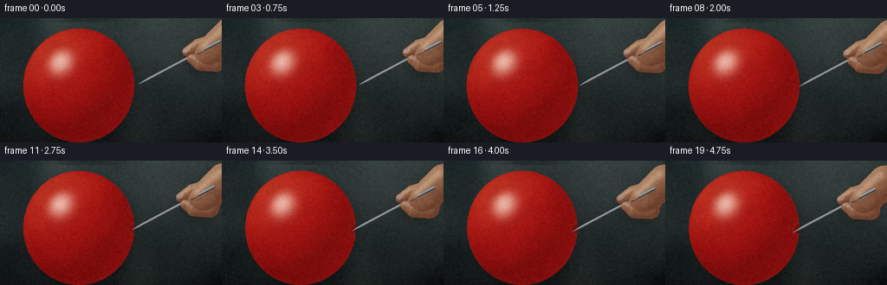
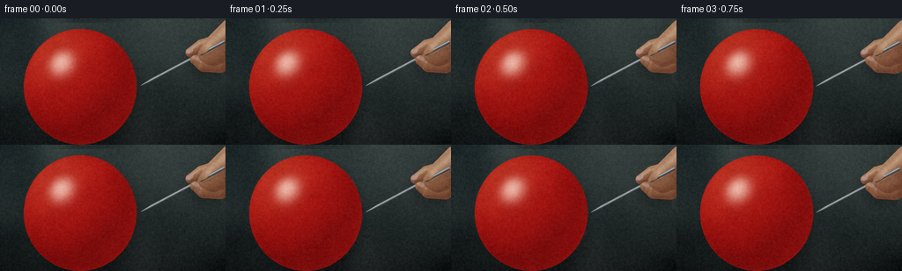
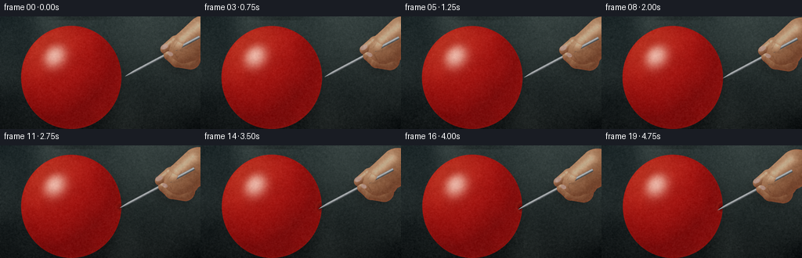
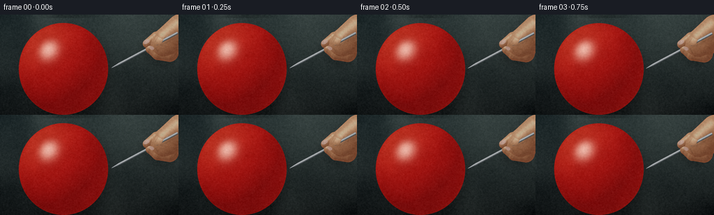

CODING AGENTS AS PIXEL WORLD MODELS
traex/DeepSeek-V4.1-Flash · phygen_021
点击播放 · 原生 RGB 像素
此结果可播放，但该运行尚未通过最终提交审核。页面展示不代表评测通过。
逐轮保存的候选
回放视频、检查图与代码变化。
每份候选均可单独播放。实际图片检查记录在下方工具轨迹中。
候选 01播放与检查图
点击播放 · 原生 RGB 像素


展开代码变化
--- 上一保存版本
+++ 本次保存版本
@@ -0,0 +1,402 @@
+from __future__ import annotations
+
+from pathlib import Path
+
+import numpy as np
+from PIL import Image
+from scipy.ndimage import gaussian_filter
+
+import artifact_io
+
+
+W, H, N, FPS = 256, 144, 20, 4.0
+SUPERSAMPLE = 3
+SH, SW = H * SUPERSAMPLE, W * SUPERSAMPLE
+
+
+def smoothstep(edge0, edge1, value):
+ t = np.clip((value - edge0) / (edge1 - edge0), 0.0, 1.0)
+ return t * t * (3.0 - 2.0 * t)
+
+
+def normalize(vector):
+ return vector / np.maximum(np.linalg.norm(vector, axis=-1, keepdims=True), 1e-7)
+
+
+def alpha_from_sdf(sdf, width):
+ return 1.0 - smoothstep(-width, width, sdf)
+
+
+def composite(base, color, alpha):
+ alpha = np.asarray(alpha, dtype=np.float32)[..., None]
+ return base * (1.0 - alpha) + color * alpha
+
+
+def segment_geometry(x, y, start, end, radius0, radius1):
+ start = np.asarray(start, dtype=np.float32)
+ end = np.asarray(end, dtype=np.float32)
+ delta = end - start
+ length2 = float(np.dot(delta, delta))
+ t = np.clip(((x - start[0]) * delta[0] + (y - start[1]) * delta[1]) / max(length2, 1e-6), 0.0, 1.0)
+ closest_x = start[0] + t * delta[0]
+ closest_y = start[1] + t * delta[1]
+ distance = np.sqrt((x - closest_x) ** 2 + (y - closest_y) ** 2)
+ radius = radius0 + (radius1 - radius0) * t
+ return distance, radius, t
+
+
+def segment_sdf_height(x, y, start, end, radius0, radius1, height_scale=0.78):
+ distance, radius, _ = segment_geometry(x, y, start, end, radius0, radius1)
+ sdf = distance - radius
+ height = np.sqrt(np.maximum(radius * radius - distance * distance, 0.0)) * height_scale
+ return sdf, height
+
+
+def ellipse_geometry(x, y, center, radii, angle=0.0):
+ ca, sa = np.cos(angle), np.sin(angle)
+ dx, dy = x - center[0], y - center[1]
+ u = ca * dx + sa * dy
+ v = -sa * dx + ca * dy
+ q = np.sqrt((u / radii[0]) ** 2 + (v / radii[1]) ** 2)
+ return u, v, q
+
+
+def ellipse_sdf_height(x, y, center, radii, angle=0.0, height_scale=0.78):
+ _, _, q = ellipse_geometry(x, y, center, radii, angle)
+ sdf = (q - 1.0) * min(radii)
+ height = np.sqrt(np.maximum(1.0 - q * q, 0.0)) * min(radii) * height_scale
+ return sdf, height
+
+
+def rotated_ellipse_mask(x, y, center, radii, angle, feather=0.8):
+ _, _, q = ellipse_geometry(x, y, center, radii, angle)
+ return 1.0 - smoothstep(1.0 - feather / min(radii), 1.0 + feather / min(radii), q)
+
+
+def make_noise(rng, sigma):
+ field = rng.normal(0.0, 1.0, (SH, SW)).astype(np.float32)
+ field = gaussian_filter(field, sigma=sigma)
+ field -= field.mean()
+ field /= max(float(field.std()), 1e-6)
+ return field.astype(np.float32)
+
+
+def make_background(x, y, vignette_noise):
+ top = np.array([0.105, 0.145, 0.150], dtype=np.float32)
+ bottom = np.array([0.040, 0.052, 0.055], dtype=np.float32)
+ v = np.clip(y / H, 0.0, 1.0)[..., None]
+ color = top * (1.0 - v) + bottom * v
+
+ light_x = (x - 176.0) / 105.0
+ light_y = (y - 6.0) / 82.0
+ glow = np.exp(-0.5 * (light_x * light_x + light_y * light_y)).astype(np.float32)
+ color += glow[..., None] * np.array([0.055, 0.060, 0.050], dtype=np.float32)
+
+ nx = (x - W * 0.5) / (W * 0.62)
+ ny = (y - H * 0.48) / (H * 0.75)
+ vignette = np.exp(-0.55 * (nx * nx + ny * ny)).astype(np.float32)
+ color *= (0.72 + 0.28 * vignette)[..., None]
+
+ color += vignette_noise[..., None] * np.array([0.010, 0.011, 0.010], dtype=np.float32)
+ return np.clip(color, 0.0, 1.0).astype(np.float32)
+
+
+def render_balloon(x, y, progress, noise_fine, noise_mid):
+ breath = 0.26 * np.sin(progress * np.pi * 1.6 + 0.2)
+ center = (91.0, 78.0 + 0.12 * np.sin(progress * np.pi * 2.0))
+ rx, ry = 64.0 + breath, 66.0 - 0.55 * breath
+ axis = np.array([0.883, -0.470], dtype=np.float32)
+ perp = np.array([0.470, 0.883], dtype=np.float32)
+
+ theta = 0.018
+ contact = np.array([center[0] + rx * np.cos(theta), center[1] + ry * np.sin(theta)], dtype=np.float32)
+ contact = contact + np.array([0.0, 0.12 * np.sin(progress * np.pi * 2.0)], dtype=np.float32)
+
+ dx, dy = x - center[0], y - center[1]
+ q = np.sqrt((dx / rx) ** 2 + (dy / ry) ** 2)
+ edge_width = 0.9 / SUPERSAMPLE
+ balloon_mask = alpha_from_sdf((q - 1.0) * min(rx, ry), edge_width)
+
+ inside = np.clip(1.0 - q * q, 0.0, 1.0)
+ height = 58.0 * np.sqrt(inside)
+
+ press = smoothstep(0.27, 0.72, progress)
+ hole_grow = smoothstep(0.48, 0.90, progress)
+ dent_sigma = 5.3 + 2.5 * press
+ contact_dx = x - contact[0]
+ contact_dy = y - contact[1]
+ contact_distance2 = contact_dx * contact_dx + contact_dy * contact_dy
+ dent = 3.5 * press * np.exp(-contact_distance2 / (2.0 * dent_sigma * dent_sigma))
+ height = np.maximum(height - dent, 0.0)
+
+ gy, gx = np.gradient(height, 1.0 / SUPERSAMPLE, 1.0 / SUPERSAMPLE)
+ normal = normalize(np.stack([-gx, -gy, np.ones_like(height)], axis=-1))
+
+ light = normalize(np.array([-0.55, -0.67, 0.52], dtype=np.float32))
+ view = np.array([0.0, 0.0, 1.0], dtype=np.float32)
+ half = normalize(light + view)
+ diffuse = np.clip(np.sum(normal * light, axis=-1), 0.0, 1.0)
+ specular = np.clip(np.sum(normal * half, axis=-1), 0.0, 1.0) ** 58
+ fresnel = (1.0 - np.clip(normal[..., 2], 0.0, 1.0)) ** 2.7
+
+ deep = np.array([0.34, 0.012, 0.018], dtype=np.float32)
+ red = np.array([0.84, 0.055, 0.045], dtype=np.float32)
+ warm = np.array([1.00, 0.23, 0.12], dtype=np.float32)
+ shade = np.clip(0.20 + 0.86 * diffuse, 0.0, 1.0)
+ albedo = deep + shade[..., None] * (red - deep)
+ albedo = albedo + (diffuse ** 4)[..., None] * (warm - red) * 0.34
+
+ texture = 0.72 * noise_mid + 0.28 * noise_fine
+ texture = np.clip(1.0 + 0.035 * texture, 0.90, 1.10)
+ albedo *= texture[..., None]
+
+ bottom_ao = np.clip((y - center[1]) / ry, 0.0, 1.0)
+ albedo *= (1.0 - 0.12 * bottom_ao ** 2)[..., None]
+ albedo *= (1.0 - 0.20 * fresnel)[..., None]
+
+ contact_shadow = press * np.exp(-contact_distance2 / (2.0 * (3.6 + 1.4 * press) ** 2))
+ albedo *= (1.0 - 0.48 * contact_shadow)[..., None]
+
+ color = albedo
+ color += specular[..., None] * np.array([1.0, 0.83, 0.74], dtype=np.float32) * 0.82
+ color += fresnel[..., None] * np.array([0.40, 0.045, 0.025], dtype=np.float32) * 0.56
+
+ fill = np.clip(np.sum(normal * normalize(np.array([0.62, 0.24, 0.74], dtype=np.float32)), axis=-1), 0.0, 1.0)
+ color += fill[..., None] * np.array([0.075, 0.012, 0.008], dtype=np.float32)
+
+ ring_radius = 5.0 + 2.2 * press
+ ring = press * np.exp(-((np.sqrt(contact_distance2) - ring_radius) / 1.35) ** 2)
+ color += ring[..., None] * np.array([0.10, 0.022, 0.014], dtype=np.float32)
+
+ # A small stressed slit appears after the dimple has fully formed.
+ hole_center = contact - axis * (0.8 + 0.8 * hole_grow)
+ hu = (x - hole_center[0]) * axis[0] + (y - hole_center[1]) * axis[1]
+ hv = (x - hole_center[0]) * perp[0] + (y - hole_center[1]) * perp[1]
+ hole_q = np.sqrt((hu / (1.7 + 1.5 * hole_grow)) ** 2 + (hv / (0.65 + 0.55 * hole_grow)) ** 2)
+ hole_mask = (1.0 - smoothstep(0.86, 1.08, hole_q)) * hole_grow
+ hole_rim = (1.0 - smoothstep(0.78, 1.22, hole_q)) * hole_grow
+ hole_color = np.array([0.022, 0.003, 0.004], dtype=np.float32)
+ color = composite(color, hole_color, hole_mask * 0.92)
+ color += (hole_rim - hole_mask)[..., None] * np.array([0.28, 0.025, 0.018], dtype=np.float32)
+
+ return color, balloon_mask, contact, axis, perp, press, hole_grow
+
+
+def needle_geometry(x, y, tip, axis, perp, length=108.0, half_width=1.72, taper=13.0):
+ rel_x, rel_y = x - tip[0], y - tip[1]
+ along = rel_x * axis[0] + rel_y * axis[1]
+ across = rel_x * perp[0] + rel_y * perp[1]
+ radius = half_width * np.power(np.clip(along / taper, 0.0, 1.0), 0.62)
+ radius = np.where(along > taper, half_width * (1.0 + 0.08 * np.clip((along - taper) / 95.0, 0.0, 1.0)), radius)
+ sdf = np.abs(across) - radius
+ sdf = np.maximum(sdf, -along)
+ sdf = np.maximum(sdf, along - length)
+ return sdf, along, across, radius
+
+
+def render_needle(x, y, tip, axis, perp):
+ sdf, along, across, radius = needle_geometry(x, y, tip, axis, perp)
+ mask = alpha_from_sdf(sdf, 0.72 / SUPERSAMPLE)
+ u = np.clip(across / np.maximum(radius, 0.08), -1.0, 1.0)
+ round_normal = np.sqrt(np.maximum(1.0 - u * u, 0.0))
+
+ light = normalize(np.array([-0.52, -0.64, 0.57], dtype=np.float32))
+ ndotl = np.clip(-0.52 * u + 0.57 * round_normal, 0.0, 1.0)
+ half_dot = np.clip((-0.25 * u + 0.92 * round_normal) / 1.0, 0.0, 1.0)
+ spec = half_dot ** 28
+ edge = smoothstep(0.70, 0.98, np.abs(u))
+
+ dark_steel = np.array([0.105, 0.120, 0.130], dtype=np.float32)
+ steel = np.array([0.52, 0.56, 0.60], dtype=np.float32)
+ color = dark_steel + ndotl[..., None] * (steel - dark_steel)
+ color += spec[..., None] * np.array([1.0, 0.97, 0.88], dtype=np.float32) * 1.25
+ color += (1.0 - edge)[..., None] * np.array([0.025, 0.030, 0.034], dtype=np.float32)
+
+ # A narrow reflected window line gives the shaft a hard metal highlight.
+ streak = np.exp(-((u + 0.28) / 0.11) ** 2) * smoothstep(0.0, 8.0, along)
+ color += streak[..., None] * np.array([0.36, 0.39, 0.43], dtype=np.float32)
+ return np.clip(color, 0.0, 1.0).astype(np.float32), mask, along
+
+
+def hand_components(grip):
+ gx, gy = grip
+ return {
+ "wrist": ((gx + 45.0, gy - 25.0), (gx + 25.0, gy - 9.0), 20.0, 17.0, "back"),
+ "index_back": ((gx + 24.0, gy - 15.0), (gx + 8.0, gy - 12.0), 10.0, 8.2, "back"),
+ "thumb_back": ((gx + 28.0, gy + 7.0), (gx + 10.0, gy + 8.0), 11.2, 9.0, "back"),
+ "index_front": ((gx + 8.0, gy - 12.0), (gx - 5.5, gy - 5.0), 8.2, 5.4, "front"),
+ "thumb_front": ((gx + 10.0, gy + 8.0), (gx + 0.5, gy + 3.0), 9.0, 6.1, "front"),
+ }
+
+
+def render_hand(x, y, grip, noise_fine, noise_mid):
+ components = hand_components(grip)
+ palm_center = (grip[0] + 23.0, grip[1] - 5.0)
+ palm_radii = (20.5, 18.0)
+ palm_angle = -0.28
+
+ palm_sdf, palm_height = ellipse_sdf_height(x, y, palm_center, palm_radii, palm_angle, 0.82)
+ full_sdf = palm_sdf
+ full_height = palm_height
+ back_sdf = palm_sdf
+ back_height = palm_height
+ front_sdf = np.full_like(x, 999.0)
+ front_height = np.zeros_like(x)
+
+ for name, (start, end, r0, r1, layer) in components.items():
+ sdf, height = segment_sdf_height(x, y, start, end, r0, r1, 0.82)
+ full_sdf = np.minimum(full_sdf, sdf)
+ full_height = np.maximum(full_height, height)
+ if layer == "back":
+ back_sdf = np.minimum(back_sdf, sdf)
+ back_height = np.maximum(back_height, height)
+ else:
+ front_sdf = np.minimum(front_sdf, sdf)
+ front_height = np.maximum(front_height, height)
+
+ aa = 0.72 / SUPERSAMPLE
+ full_mask = alpha_from_sdf(full_sdf, aa)
+ back_mask = alpha_from_sdf(back_sdf, aa)
+ front_mask = alpha_from_sdf(front_sdf, aa)
+
+ gy, gx = np.gradient(full_height, 1.0 / SUPERSAMPLE, 1.0 / SUPERSAMPLE)
+ normal = normalize(np.stack([-gx, -gy, np.ones_like(full_height)], axis=-1))
+ light = normalize(np.array([-0.55, -0.66, 0.54], dtype=np.float32))
+ diffuse = np.clip(np.sum(normal * light, axis=-1), 0.0, 1.0)
+ specular = np.clip(np.sum(normal * normalize(light + np.array([0.0, 0.0, 1.0], dtype=np.float32)), axis=-1), 0.0, 1.0) ** 34
+ fresnel = (1.0 - np.clip(normal[..., 2], 0.0, 1.0)) ** 2.2
+
+ skin_dark = np.array([0.31, 0.145, 0.090], dtype=np.float32)
+ skin_mid = np.array([0.66, 0.385, 0.255], dtype=np.float32)
+ skin_light = np.array([0.94, 0.66, 0.47], dtype=np.float32)
+ diffuse_shade = np.clip(0.23 + 0.80 * diffuse, 0.0, 1.0)
+ color = skin_dark + diffuse_shade[..., None] * (skin_mid - skin_dark)
+ color += (diffuse ** 5)[..., None] * (skin_light - skin_mid) * 0.34
+ color += specular[..., None] * np.array([0.95, 0.74, 0.58], dtype=np.float32) * 0.30
+ color += fresnel[..., None] * np.array([0.31, 0.055, 0.025], dtype=np.float32) * 0.52
+
+ pores = 0.78 * noise_fine + 0.22 * noise_mid
+ color *= np.clip(1.0 + 0.026 * pores, 0.90, 1.10)[..., None]
+
+ # Soft creases at the knuckles and between the two gripping fingers.
+ crease_specs = [
+ ((grip[0] + 8.5, grip[1] - 13.5), (grip[0] + 4.5, grip[1] - 7.0), 0.48),
+ ((grip[0] + 9.0, grip[1] + 8.5), (grip[0] + 5.5, grip[1] + 2.5), 0.52),
+ ((grip[0] + 21.0, grip[1] - 16.0), (grip[0] + 15.0, grip[1] - 8.0), 0.38),
+ ]
+ crease = np.zeros_like(x)
+ for start, end, width in crease_specs:
+ distance, _, _ = segment_geometry(x, y, start, end, 0.0, 0.0)
+ crease += np.exp(-(distance / width) ** 2)
+ color *= (1.0 - 0.18 * np.clip(crease, 0.0, 1.0))[..., None]
+
+ # Nails sit on the two distal finger segments.
+ index_dir = normalize(np.array([-13.5, 7.0], dtype=np.float32))
+ index_perp = np.array([-index_dir[1], index_dir[0]], dtype=np.float32)
+ index_nail_center = np.array([grip[0] - 5.2, grip[1] - 5.1], dtype=np.float32) + index_perp * 2.1
+ index_nail_angle = float(np.arctan2(index_dir[1], index_dir[0]))
+ index_nail = rotated_ellipse_mask(x, y, index_nail_center, (4.3, 2.7), index_nail_angle, 0.52) * front_mask
+
+ thumb_dir = normalize(np.array([-9.5, -5.0], dtype=np.float32))
+ thumb_perp = np.array([-thumb_dir[1], thumb_dir[0]], dtype=np.float32)
+ thumb_nail_center = np.array([grip[0] + 0.7, grip[1] + 3.0], dtype=np.float32) + thumb_perp * 1.7
+ thumb_nail_angle = float(np.arctan2(thumb_dir[1], thumb_dir[0]))
+ thumb_nail = rotated_ellipse_mask(x, y, thumb_nail_center, (3.4, 2.2), thumb_nail_angle, 0.45) * front_mask
+
+ nail_mask = np.clip(index_nail + thumb_nail, 0.0, 1.0)
+ nail_color = np.array([0.76, 0.54, 0.48], dtype=np.float32)
+ nail_color = nail_color + (0.12 * np.clip(noise_fine, 0.0, 1.0))[..., None] * np.array([1.0, 0.8, 0.7], dtype=np.float32)
+ color = composite(color, nail_color, nail_mask * 0.82)
+
+ return np.clip(color, 0.0, 1.0).astype(np.float32), full_mask, back_mask, front_mask
+
+
+def tone_map(image, grain):
+ image = np.maximum(image, 0.0)
+ image = 1.0 - np.exp(-1.28 * image)
+ image = np.power(np.clip(image, 0.0, 1.0), 1.0 / 1.08)
+ image += grain[..., None] * 0.010
+ return np.clip(image, 0.0, 1.0)
+
+
+def render_frame(index, x, y, background, noise_fine, noise_mid, grain):
+ progress = index / float(N - 1)
+ ease = 0.74 * progress + 0.26 * (progress * progress * (3.0 - 2.0 * progress))
+
+ center = (91.0, 78.0)
+ rx, ry = 64.0, 66.0
+ theta = 0.018
+ contact = np.array([center[0] + rx * np.cos(theta), center[1] + ry * np.sin(theta)], dtype=np.float32)
+ axis = np.array([0.883, -0.470], dtype=np.float32)
+ perp = np.array([0.470, 0.883], dtype=np.float32)
+
+ tip_start = contact + axis * 5.2
+ tip_end = contact - axis * 8.8
+ tip = tip_start * (1.0 - ease) + tip_end * ease
+ tremor = 0.18 * np.sin(progress * np.pi * 2.2 + 0.4)
+ tip = tip + perp * tremor
+ grip = tip + axis * 70.0
+
+ image = background.copy()
+
+ balloon_shadow = gaussian_filter((np.sqrt(((x - 92.0) / 65.0) ** 2 + ((y - 79.0) / 67.0) ** 2) < 1.0).astype(np.float32), 8.5 * SUPERSAMPLE)
+ balloon_shadow = np.roll(balloon_shadow, (5 * SUPERSAMPLE, 4 * SUPERSAMPLE), axis=(0, 1))
+ image *= (1.0 - 0.25 * balloon_shadow[..., None])
+
+ balloon_color, balloon_mask, contact, axis, perp, press, hole_grow = render_balloon(
+ x, y, progress, noise_fine, noise_mid
+ )
+ image = composite(image, balloon_color, balloon_mask)
+
+ hand_color, hand_mask, back_mask, front_mask = render_hand(x, y, grip, noise_fine, noise_mid)
+ hand_shadow = gaussian_filter(hand_mask, 5.0 * SUPERSAMPLE)
+ hand_shadow = np.roll(hand_shadow, (7 * SUPERSAMPLE, -5 * SUPERSAMPLE), axis=(0, 1))
+ image *= (1.0 - 0.24 * hand_shadow[..., None] * (1.0 - balloon_mask[..., None]))
+
+ needle_color, needle_mask, needle_along = render_needle(x, y, tip, axis, perp)
+ needle_shadow = gaussian_filter(needle_mask, 1.35 * SUPERSAMPLE)
+ needle_shadow = np.roll(needle_shadow, (3 * SUPERSAMPLE, 3 * SUPERSAMPLE), axis=(0, 1))
+ image *= (1.0 - 0.25 * needle_shadow[..., None] * balloon_mask[..., None])
+
+ image = composite(image, hand_color, back_mask)
+ image *= (1.0 - 0.16 * needle_shadow[..., None] * back_mask[..., None])
+ image = composite(image, needle_color, needle_mask)
+ image = composite(image, hand_color, front_mask)
+
+ # A very slight bloom keeps the metal and latex highlights photographic.
+ luminance = np.maximum(image.max(axis=-1) - 0.72, 0.0)
+ bloom = gaussian_filter(luminance.astype(np.float32), 3.2 * SUPERSAMPLE)
+ image += bloom[..., None] * np.array([0.16, 0.11, 0.08], dtype=np.float32)
+
+ return tone_map(image, grain)
+
+
+def main():
+ case_dir = Path(__file__).resolve().parent
+ yy, xx = np.mgrid[0:SH, 0:SW].astype(np.float32)
+ x = (xx + 0.5) / SUPERSAMPLE
+ y = (yy + 0.5) / SUPERSAMPLE
+
+ rng = np.random.default_rng(2107)
+ noise_fine = make_noise(rng, 1.1 * SUPERSAMPLE)
+ noise_mid = make_noise(rng, 7.0 * SUPERSAMPLE)
+ vignette_noise = make_noise(rng, 13.0 * SUPERSAMPLE)
+ background = make_background(x, y, vignette_noise)
+
+ frames = []
+ for index in range(N):
+ grain = gaussian_filter(rng.normal(0.0, 1.0, (SH, SW)).astype(np.float32), 0.55 * SUPERSAMPLE)
+ grain /= max(float(grain.std()), 1e-6)
+ high = render_frame(index, x, y, background, noise_fine, noise_mid, grain)
+ image = Image.fromarray(np.round(high * 255.0).astype(np.uint8), mode="RGB")
+ image = image.resize((W, H), Image.Resampling.LANCZOS)
+ frames.append(np.asarray(image, dtype=np.uint8))
+ print(f"rendered frame {index + 1:02d}/{N}", flush=True)
+
+ frames = np.stack(frames, axis=0)
+ artifact_io.save(frames, case_dir)
+ print(f"saved {frames.shape} to {case_dir}")
+
+
+if __name__ == "__main__":
+ main()
候选 02播放与检查图
点击播放 · 原生 RGB 像素


展开代码变化
--- 上一保存版本
+++ 本次保存版本
@@ -169,14 +169,14 @@
color += ring[..., None] * np.array([0.10, 0.022, 0.014], dtype=np.float32)
# A small stressed slit appears after the dimple has fully formed.
- hole_center = contact - axis * (0.8 + 0.8 * hole_grow)
+ hole_center = contact - axis * (1.2 + 0.7 * hole_grow)
hu = (x - hole_center[0]) * axis[0] + (y - hole_center[1]) * axis[1]
hv = (x - hole_center[0]) * perp[0] + (y - hole_center[1]) * perp[1]
- hole_q = np.sqrt((hu / (1.7 + 1.5 * hole_grow)) ** 2 + (hv / (0.65 + 0.55 * hole_grow)) ** 2)
+ hole_q = np.sqrt((hu / (2.1 + 1.5 * hole_grow)) ** 2 + (hv / (0.82 + 0.62 * hole_grow)) ** 2)
hole_mask = (1.0 - smoothstep(0.86, 1.08, hole_q)) * hole_grow
hole_rim = (1.0 - smoothstep(0.78, 1.22, hole_q)) * hole_grow
- hole_color = np.array([0.022, 0.003, 0.004], dtype=np.float32)
- color = composite(color, hole_color, hole_mask * 0.92)
+ hole_color = np.array([0.012, 0.002, 0.003], dtype=np.float32)
+ color = composite(color, hole_color, hole_mask * 0.97)
color += (hole_rim - hole_mask)[..., None] * np.array([0.28, 0.025, 0.018], dtype=np.float32)
return color, balloon_mask, contact, axis, perp, press, hole_grow
@@ -206,33 +206,33 @@
spec = half_dot ** 28
edge = smoothstep(0.70, 0.98, np.abs(u))
- dark_steel = np.array([0.105, 0.120, 0.130], dtype=np.float32)
- steel = np.array([0.52, 0.56, 0.60], dtype=np.float32)
+ dark_steel = np.array([0.17, 0.19, 0.20], dtype=np.float32)
+ steel = np.array([0.70, 0.74, 0.77], dtype=np.float32)
color = dark_steel + ndotl[..., None] * (steel - dark_steel)
color += spec[..., None] * np.array([1.0, 0.97, 0.88], dtype=np.float32) * 1.25
color += (1.0 - edge)[..., None] * np.array([0.025, 0.030, 0.034], dtype=np.float32)
# A narrow reflected window line gives the shaft a hard metal highlight.
streak = np.exp(-((u + 0.28) / 0.11) ** 2) * smoothstep(0.0, 8.0, along)
- color += streak[..., None] * np.array([0.36, 0.39, 0.43], dtype=np.float32)
+ color += streak[..., None] * np.array([0.42, 0.45, 0.48], dtype=np.float32)
return np.clip(color, 0.0, 1.0).astype(np.float32), mask, along
def hand_components(grip):
gx, gy = grip
return {
- "wrist": ((gx + 45.0, gy - 25.0), (gx + 25.0, gy - 9.0), 20.0, 17.0, "back"),
- "index_back": ((gx + 24.0, gy - 15.0), (gx + 8.0, gy - 12.0), 10.0, 8.2, "back"),
- "thumb_back": ((gx + 28.0, gy + 7.0), (gx + 10.0, gy + 8.0), 11.2, 9.0, "back"),
- "index_front": ((gx + 8.0, gy - 12.0), (gx - 5.5, gy - 5.0), 8.2, 5.4, "front"),
- "thumb_front": ((gx + 10.0, gy + 8.0), (gx + 0.5, gy + 3.0), 9.0, 6.1, "front"),
+ "wrist": ((gx + 43.0, gy - 23.0), (gx + 22.0, gy - 8.0), 24.0, 20.5, "back"),
+ "index_back": ((gx + 22.0, gy - 15.0), (gx + 7.0, gy - 12.0), 12.0, 9.5, "back"),
+ "thumb_back": ((gx + 25.0, gy + 9.0), (gx + 9.0, gy + 9.0), 13.2, 10.5, "back"),
+ "index_front": ((gx + 7.0, gy - 12.0), (gx - 7.0, gy - 4.0), 9.5, 6.2, "front"),
+ "thumb_front": ((gx + 9.0, gy + 9.0), (gx - 2.0, gy + 3.5), 10.6, 7.0, "front"),
}
def render_hand(x, y, grip, noise_fine, noise_mid):
components = hand_components(grip)
- palm_center = (grip[0] + 23.0, grip[1] - 5.0)
- palm_radii = (20.5, 18.0)
+ palm_center = (grip[0] + 21.0, grip[1] - 4.0)
+ palm_radii = (24.0, 21.0)
palm_angle = -0.28
palm_sdf, palm_height = ellipse_sdf_height(x, y, palm_center, palm_radii, palm_angle, 0.82)
@@ -266,13 +266,13 @@
specular = np.clip(np.sum(normal * normalize(light + np.array([0.0, 0.0, 1.0], dtype=np.float32)), axis=-1), 0.0, 1.0) ** 34
fresnel = (1.0 - np.clip(normal[..., 2], 0.0, 1.0)) ** 2.2
- skin_dark = np.array([0.31, 0.145, 0.090], dtype=np.float32)
- skin_mid = np.array([0.66, 0.385, 0.255], dtype=np.float32)
- skin_light = np.array([0.94, 0.66, 0.47], dtype=np.float32)
+ skin_dark = np.array([0.34, 0.155, 0.090], dtype=np.float32)
+ skin_mid = np.array([0.72, 0.42, 0.265], dtype=np.float32)
+ skin_light = np.array([1.00, 0.72, 0.51], dtype=np.float32)
diffuse_shade = np.clip(0.23 + 0.80 * diffuse, 0.0, 1.0)
color = skin_dark + diffuse_shade[..., None] * (skin_mid - skin_dark)
color += (diffuse ** 5)[..., None] * (skin_light - skin_mid) * 0.34
- color += specular[..., None] * np.array([0.95, 0.74, 0.58], dtype=np.float32) * 0.30
+ color += specular[..., None] * np.array([1.00, 0.80, 0.62], dtype=np.float32) * 0.42
color += fresnel[..., None] * np.array([0.31, 0.055, 0.025], dtype=np.float32) * 0.52
pores = 0.78 * noise_fine + 0.22 * noise_mid
@@ -293,18 +293,18 @@
# Nails sit on the two distal finger segments.
index_dir = normalize(np.array([-13.5, 7.0], dtype=np.float32))
index_perp = np.array([-index_dir[1], index_dir[0]], dtype=np.float32)
- index_nail_center = np.array([grip[0] - 5.2, grip[1] - 5.1], dtype=np.float32) + index_perp * 2.1
+ index_nail_center = np.array([grip[0] - 6.8, grip[1] - 4.8], dtype=np.float32) + index_perp * 2.4
index_nail_angle = float(np.arctan2(index_dir[1], index_dir[0]))
- index_nail = rotated_ellipse_mask(x, y, index_nail_center, (4.3, 2.7), index_nail_angle, 0.52) * front_mask
+ index_nail = rotated_ellipse_mask(x, y, index_nail_center, (4.9, 3.0), index_nail_angle, 0.52) * front_mask
thumb_dir = normalize(np.array([-9.5, -5.0], dtype=np.float32))
thumb_perp = np.array([-thumb_dir[1], thumb_dir[0]], dtype=np.float32)
- thumb_nail_center = np.array([grip[0] + 0.7, grip[1] + 3.0], dtype=np.float32) + thumb_perp * 1.7
+ thumb_nail_center = np.array([grip[0] - 1.4, grip[1] + 3.8], dtype=np.float32) + thumb_perp * 1.9
thumb_nail_angle = float(np.arctan2(thumb_dir[1], thumb_dir[0]))
- thumb_nail = rotated_ellipse_mask(x, y, thumb_nail_center, (3.4, 2.2), thumb_nail_angle, 0.45) * front_mask
+ thumb_nail = rotated_ellipse_mask(x, y, thumb_nail_center, (3.8, 2.5), thumb_nail_angle, 0.45) * front_mask
nail_mask = np.clip(index_nail + thumb_nail, 0.0, 1.0)
- nail_color = np.array([0.76, 0.54, 0.48], dtype=np.float32)
+ nail_color = np.array([0.86, 0.60, 0.53], dtype=np.float32)
nail_color = nail_color + (0.12 * np.clip(noise_fine, 0.0, 1.0))[..., None] * np.array([1.0, 0.8, 0.7], dtype=np.float32)
color = composite(color, nail_color, nail_mask * 0.82)
@@ -331,11 +331,11 @@
perp = np.array([0.470, 0.883], dtype=np.float32)
tip_start = contact + axis * 5.2
- tip_end = contact - axis * 8.8
+ tip_end = contact - axis * 7.8
tip = tip_start * (1.0 - ease) + tip_end * ease
tremor = 0.18 * np.sin(progress * np.pi * 2.2 + 0.4)
tip = tip + perp * tremor
- grip = tip + axis * 70.0
+ grip = tip + axis * 66.0
image = background.copy()
候选 03播放与检查图
点击播放 · 原生 RGB 像素

展开代码变化
--- 上一保存版本
+++ 本次保存版本
@@ -388,7 +388,7 @@
grain = gaussian_filter(rng.normal(0.0, 1.0, (SH, SW)).astype(np.float32), 0.55 * SUPERSAMPLE)
grain /= max(float(grain.std()), 1e-6)
high = render_frame(index, x, y, background, noise_fine, noise_mid, grain)
- image = Image.fromarray(np.round(high * 255.0).astype(np.uint8), mode="RGB")
+ image = Image.fromarray(np.round(high * 255.0).astype(np.uint8))
image = image.resize((W, H), Image.Resampling.LANCZOS)
frames.append(np.asarray(image, dtype=np.uint8))
print(f"rendered frame {index + 1:02d}/{N}", flush=True)
可观测工具轨迹
实际执行的命令与返回图片。
命令 1exit 0
/bin/bash -lc "pwd && rg --files -g '"'!**/.git/**'"' | sort"
命令 2exit 0
/bin/bash -lc "sed -n '1,240p' prompt.txt"
命令 3exit 0
/bin/bash -lc "sed -n '1,260p' GENERATION_RULES.md"
命令 4exit 0
/bin/bash -lc 'cat task_spec.json'
命令 5exit 0
/bin/bash -lc "sed -n '1,260p' artifact_io.py"
命令 6exit 0
/bin/bash -lc "sed -n '1,260p' player_template.html"
命令 7exit 0
/bin/bash -lc "python - <<'PY'
import importlib.util
for m in ['numpy','PIL','cv2','scipy','imageio','matplotlib']:
print(m, bool(importlib.util.find_spec(m)))
PY"命令 8exit 0
/bin/bash -lc 'git status --short'
命令 9exit 0
/bin/bash -lc 'python generate.py'
命令 10exit 0
/bin/bash -lc 'ls -lh frames/*.png inspection.png transition_check.png index.html pixels.npz'
命令 11exit 0
/bin/bash -lc 'command -v chafa || command -v viu || command -v img2txt || command -v jp2 || true'
命令 12exit 0
/bin/bash -lc "python - <<'PY'
import numpy as np
from PIL import Image
from pathlib import Path
frames=np.stack([np.asarray(Image.open(p)) for p in sorted(Path('frames').glob('*.png'))])
print('shape',frames.shape,'min/max/mean',frames.min(),frames.max(),frames.mean(axis=(0,1,2)))
print('per-frame mean',np.round(frames.mean(axis=(1,2,3)),2).tolist())
print('per-frame std',np.round(frames.std(axis=(1,2,3)),2).tolist())
d=np.abs(frames[1:].astype(int)-frames[:-1].astype(int))
print('mean abs delta',np.round(d.mean(axis=(1,2,3)),2).tolist())
print('changed pixels >8',np.round((d.max(axis=-1)>8).mean(axis=(1,2))*100,1).tolist())
PY"命令 13exit 0
/bin/bash -lc "python - <<'PY'
from PIL import Image, ImageOps
import numpy as np
chars=' .,:;irsXA253hMHGS#9B&@'
for fi in [0,9,19]:
im=Image.open(f'frames/{fi:02d}.png').convert('L').resize((64,36),Image.Resampling.LANCZOS)
a=np.asarray(im,dtype=float)
a=(a-a.min())/(a.max()-a.min()+1e-9)
print(f'\\nFRAME {fi}')
for row in a:
print(''.join(chars[min(len(chars)-1,int(v*(len(chars)-1)))] for v in row))
PY"命令 14exit 0
/bin/bash -lc "python - <<'PY'
from PIL import Image
import numpy as np
for fi in [0,10,19]:
a=np.asarray(Image.open(f'frames/{fi:02d}.png')).astype(float)/255
mx=a.max(-1); mn=a.min(-1); v=mx; s=np.where(mx>0,(mx-mn)/mx,0)
r,g,b=a.transpose(2,0,1)
out=[]
for yy in range(0,144,4):
row=''
for xx in range(0,256,4):
block=a[yy:yy+4,xx:xx+4].reshape(-1,3)
rgb=block.mean(0); R,G,B=rgb
if R>G*1.45 and R>B*1.6 and R>0.24: c='R' # red balloon
elif R>G*1.15 and G>B*1.15 and R>0.30: c='s' # skin
elif max(rgb)-min(rgb)<0.08 and max(rgb)>0.18: c='M' # metal
elif max(rgb)<0.11: c=' '
elif max(rgb)<0.22: c='.'
elif max(rgb)<0.40: c=':'
else: c='o'
row+=c
out.append(row)
print('\\nFRAME',fi)
print('\\n'.join(out))
PY"命令 15exit 0
/bin/bash -lc "python - <<'PY'
from PIL import Image
import numpy as np
chars=' .,:;irsXA253hMHGS#9B&@'
for fi in [0,9,19]:
im=Image.open(f'frames/{fi:02d}.png').convert('RGB')
# right-hand region enlarged for inspection
crop=im.crop((120,0,256,110)).resize((80,50),Image.Resampling.LANCZOS).convert('L')
a=np.asarray(crop,dtype=float)
a=(a-a.min())/(a.max()-a.min()+1e-9)
print(f'\\nRIGHT FRAME {fi}')
for row in a:
print(''.join(chars[min(len(chars)-1,int(v*(len(chars)-1)))] for v in row))
PY"命令 16exit 0
/bin/bash -lc "python - <<'PY'
import numpy as np
from PIL import Image
for fi in [0,5,10,15,19]:
a=np.asarray(Image.open(f'frames/{fi:02d}.png')).astype(float)/255
r,g,b=a.transpose(2,0,1)
masks={
'red': (r>g*1.45)&(r>b*1.6)&(r>.22),
'skin': (r>g*1.14)&(g>b*1.08)&(r>.32)&~((r>g*1.45)&(r>b*1.6)),
'dark': a.max(-1)<.10,
'bright': a.max(-1)>.75,
}
print('frame',fi)
for k,m in masks.items():
ys,xs=np.where(m)
print(' ',k,'pct',round(m.mean()*100,1),'bbox', (xs.min(),ys.min(),xs.max(),ys.max()) if len(xs) else None)
print(' samples')
for x,y in [(155,79),(160,77),(170,72),(200,55),(220,44),(240,40),(90,78),(30,80),(250,20)]:
print((x,y),tuple(np.round(a[y,x]*255).astype(int)))
PY"命令 17exit 1
/bin/bash -lc "python - <<'PY'
from PIL import Image
im=Image.open('frames/19.png')
im.resize((1024,576),Image.Resampling.NEAREST).save('/tmp/frame19_big.png')
im=Image.open('inspection.png')
print(im.size)
PY"命令 18exit 0
/bin/bash -lc "mkdir -p .tmp && python - <<'PY'
from PIL import Image
im=Image.open('frames/19.png')
im.resize((1024,576),Image.Resampling.NEAREST).save('.tmp/frame19_big.png')
print(Image.open('inspection.png').size)
PY"命令 19exit 0
/bin/bash -lc "python - <<'PY'
from PIL import Image
import numpy as np
im=np.asarray(Image.open('frames/19.png')).astype(float)/255
for y in range(0,100,2):
row=''
for x in range(140,256,2):
R,G,B=im[y:y+2,x:x+2].mean((0,1))
mx=max(R,G,B); mn=min(R,G,B)
if R>.22 and R>G*1.45 and R>B*1.6: c='R'
elif R>.30 and R>G*1.18 and G>B*1.05: c='S'
elif mx>.15 and mx-mn<.075: c='m'
elif mx>.45 and R>G*1.05 and G>B*1.02: c='H'
elif mx<.08: c=' '
elif mx<.16: c='.'
elif mx<.28: c=':'
else: c='o'
row+=c
print(f'{y:03d} '+row)
PY"命令 20exit 0
/bin/bash -lc "python - <<'PY'
import numpy as np
from PIL import Image
a=np.asarray(Image.open('frames/19.png')).astype(np.float32)/255
for y in [35,40,45,50,55,60,65]:
print('y',y)
for x in [180,185,190,195,200,205,210,215,220,225,230,235,240,245,250]:
print(x,tuple(np.round(a[y,x]*255).astype(int)),end='; ')
print()
PY"命令 21exit 0
/bin/bash -lc "python - <<'PY'
import generate as g, numpy as np
from PIL import Image
# calculate intended coordinates in final space
p=1.0
center=np.array([91,78.]); rx,ry=64.,66.; theta=.018
contact=np.array([center[0]+rx*np.cos(theta),center[1]+ry*np.sin(theta)])+np.array([0,.12*np.sin(p*np.pi*2)])
axis=np.array([.883,-.47]); perp=np.array([.47,.883])
tip=contact-axis*8.8
grip=tip+axis*70
print('contact',contact,'tip',tip,'grip',grip)
comps=g.hand_components(grip)
for k,v in comps.items(): print(k,v)
PY"命令 22exit 1
/bin/bash -lc "python - <<'PY'
from PIL import Image
import numpy as np
im=Image.open('frames/19.png').convert('RGB')
# inspect average colors in windows
for name,box in [('wrist',(228,20,256,45)),('palm',(205,38,235,66)),('finger',(198,42,218,52)),('shaft',(155,78,225,38)),('balloon',(20,20,150,135)),('bg',(150,0,200,20))]:
a=np.asarray(im.crop(box)).reshape(-1,3)
print(name,'mean',a.mean(0).round(1),'min',a.min(0),'max',a.max(0),'p95',np.percentile(a,95,axis=0).round(1))
PY"命令 23exit 0
/bin/bash -lc "python - <<'PY'
from PIL import Image
import numpy as np
im=Image.open('frames/19.png').convert('RGB')
# find skin-like contiguous region rough centroid/area
a=np.asarray(im).astype(float)/255
r,g,b=a.transpose(2,0,1)
m=(r>.32)&(r>g*1.14)&(g>b*1.05)&~((r>g*1.5)&(r>b*1.7))
# print row spans in right half
for y in range(0,90,3):
xs=np.where(m[y,160:])[0]+160
if len(xs): print(y,xs.min(),xs.max(),len(xs))
PY"命令 24exit 0
/bin/bash -lc "python - <<'PY'
import numpy as np
from PIL import Image
im=Image.open('frames/19.png')
im.crop((135,30,256,100)).resize((726,420),Image.Resampling.NEAREST).save('.tmp/contact.png')
im.crop((180,0,256,75)).resize((456,450),Image.Resampling.NEAREST).save('.tmp/hand.png')
print('saved crops')
PY"命令 25exit 0
/bin/bash -lc "python - <<'PY'
from PIL import Image
import numpy as np
a=np.asarray(Image.open('frames/19.png')).astype(float)/255
# 2x2 blocks, classify by hue/brightness
for y in range(0,100,2):
row=''
for x in range(130,256,2):
R,G,B=a[y:y+2,x:x+2].mean((0,1)); mx=max(R,G,B); mn=min(R,G,B)
if R>.30 and R>G*1.45 and R>B*1.6: c='R'
elif R>.35 and R>G*1.17 and G>B*1.10: c='H'
elif mx>.25 and mx-mn<.10 and B>=R*.85: c='n'
elif mx>.48 and R>G*1.04 and G>B*1.02: c='h'
elif mx<.07: c=' '
elif mx<.14: c='.'
elif mx<.24: c=':'
elif mx<.38: c='o'
elif mx<.55: c='O'
else: c='#'
row+=c
print(f'{y:03d} {row}')
PY"命令 26exit 0
/bin/bash -lc 'mkdir -p .tmp/candidate_01 && cp -r frames inspection.png transition_check.png index.html pixels.npz .tmp/candidate_01/ && python generate.py'
命令 27exit 0
/bin/bash -lc "python - <<'PY'
from PIL import Image
import numpy as np
from pathlib import Path
for label,root in [('old',Path('.tmp/candidate_01')),('new',Path('.'))]:
print(label)
for fi in [0,10,19]:
a=np.asarray(Image.open(root/f'frames/{fi:02d}.png')).astype(float)/255
r,g,b=a.transpose(2,0,1)
skin=(r>.32)&(r>g*1.14)&(g>b*1.05)&~((r>g*1.5)&(r>b*1.7))
metal=(a.max(-1)>.24)&((a.max(-1)-a.min(-1))<.10)&(b>=r*.9)
ys,xs=np.where(skin)
print(' frame',fi,'skin%',round(skin.mean()*100,2),'skin bbox',(xs.min(),ys.min(),xs.max(),ys.max()) if len(xs) else None,'metal%',round(metal.mean()*100,2),'mean',np.round(a.mean((0,1))*255,1))
PY"命令 28exit 0
/bin/bash -lc "python - <<'PY'
from PIL import Image
import numpy as np
for label,root in [('old','.tmp/candidate_01'),('new','.')]:
a=np.asarray(Image.open(f'{root}/frames/19.png')).astype(float)/255
r,g,b=a.transpose(2,0,1)
metal=(a.max(-1)>.24)&((a.max(-1)-a.min(-1))<.10)&(b>=r*.9)
print(label)
for y in range(32,90,4):
xs=np.where(metal[y,145:240])[0]+145
if len(xs): print(y, xs.min(), xs.max(), len(xs), 'max', np.round(a[y,xs].max(0)*255).astype(int))
PY"命令 29exit 0
/bin/bash -lc "python - <<'PY'
from PIL import Image
import numpy as np
for label,root in [('old','.tmp/candidate_01'),('new','.')]:
print('\\n',label)
a=np.asarray(Image.open(f'{root}/frames/19.png')).astype(float)/255
for y in range(0,90,2):
row=''
for x in range(130,256,2):
R,G,B=a[y:y+2,x:x+2].mean((0,1)); mx=max(R,G,B); mn=min(R,G,B)
if R>.30 and R>G*1.45 and R>B*1.6: c='R'
elif R>.35 and R>G*1.17 and G>B*1.10: c='H'
elif mx>.25 and mx-mn<.10 and B>=R*.85: c='n'
elif mx>.48 and R>G*1.04 and G>B*1.02: c='h'
elif mx<.07: c=' '
elif mx<.14: c='.'
elif mx<.24: c=':'
elif mx<.38: c='o'
elif mx<.55: c='O'
else: c='#'
row+=c
print(f'{y:03d} {row}')
PY"命令 30exit 0
/bin/bash -lc "python - <<'PY'
from PIL import Image
import numpy as np
for label,root in [('old','.tmp/candidate_01'),('new','.')]:
a=np.asarray(Image.open(f'{root}/frames/19.png')).astype(float)/255
# contact patch x 145-175 y 68-90, report color grid in 2px blocks
print('\\n',label)
for y in range(68,90,2):
row=[]
for x in range(145,177,2):
c=np.round(a[y:y+2,x:x+2].mean((0,1))*255).astype(int)
row.append('%02x%02x%02x'%tuple(c))
print(y,' '.join(row))
PY"命令 31exit 0
/bin/bash -lc "python - <<'PY'
import json, re
from pathlib import Path
import numpy as np
from PIL import Image
root=Path('.')
spec=json.loads((root/'task_spec.json').read_text())
frames=np.stack([np.asarray(Image.open(root/'frames'/f'{i:02d}.png')) for i in range(spec['frames'])])
assert frames.shape == (spec['frames'],spec['height'],spec['width'],3), frames.shape
assert frames.dtype == np.uint8
with np.load(root/'pixels.npz') as z:
assert z['pixels'].shape == (spec['height'],spec['width'],spec['frames'])
packed=z['pixels'].transpose(2,0,1)
expected=(frames[...,0].astype(np.uint32)<<16)|(frames[...,1].astype(np.uint32)<<8)|frames[...,2]
assert np.array_equal(packed,expected)
html=(root/'index.html').read_text()
assert 'window.__pixelReady=true' in html and '__DATA__' not in html and '__ID__' not in html
assert len(re.findall(r'data:image',html))==0
print('validated frames:',frames.shape)
print('pixel range:',int(frames.min()),int(frames.max()))
print('mean frame delta:',round(float(np.abs(frames[1:].astype(np.int16)-frames[:-1].astype(np.int16)).mean()),3))
print('player size:',(root/'index.html').stat().st_size,'bytes')
print('required artifacts: frames/, pixels.npz, inspection.png, transition_check.png, index.html, generate.py')
PY"命令 32exit 0
/bin/bash -lc 'python generate.py'
命令 33exit 0
/bin/bash -lc "python - <<'PY'
import json
from pathlib import Path
import numpy as np
from PIL import Image
spec=json.loads(Path('task_spec.json').read_text())
frames=np.stack([np.asarray(Image.open(Path('frames')/f'{i:02d}.png')) for i in range(spec['frames'])])
assert frames.shape==(20,144,256,3) and frames.dtype==np.uint8
assert (Path('frames')/f'{spec[\"frames\"]-1:02d}.png').is_file()
assert Path('pixels.npz').is_file() and Path('index.html').is_file() and Path('inspection.png').is_file()
print('PASS: 20 RGB frames at 256x144, 4 fps; player and packed pixels present')
print('frame means:',', '.join(f'{v:.2f}' for v in frames.mean(axis=(1,2,3))))
PY"命令 34exit 0
/bin/bash -lc 'git status --short -- generate.py frames pixels.npz inspection.png transition_check.png index.html .tmp 2>/dev/null || true'
命令 35exit 0
/bin/bash -lc "git status --short --untracked-files=all | sed -n '1,80p'"
保存候选 3 份；完成命令 35 次；可验证图片返回 0 张。原始 API 响应与完整日志保留在本地。